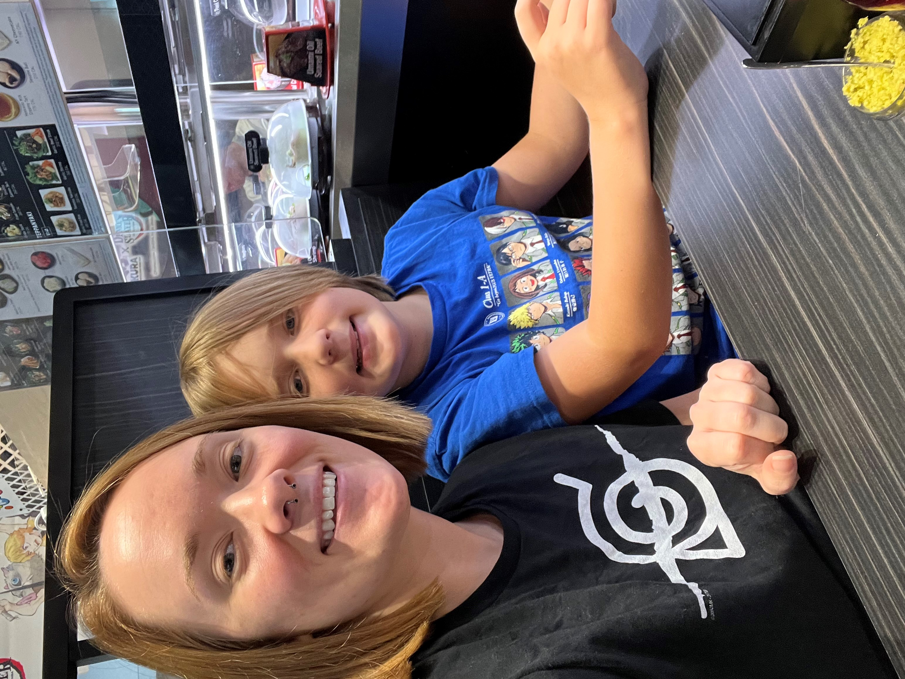

The sushi goes round and round...
Kura has been a staple in my family's "treat yourself" days. The experience there is unlike anything you will anywhere else, and they serve the freshest sushi that you can find! They stick to an authentic menu by only using premium and natural ingredients in alignment with an authentic Japanese "kaiten" sushi bar experience. Kura is constantly coming up with new menu items, so the menu is refreshed every time you visit with seasonal dishes. Each table has a touchpad where you can order additional warm dishes such as ramen, appetizers, and desserts, as well as more sushi options. Those selections zoom straight to you on a quicker conveyor belt, aside from the constantly-rotating belt with a plethora of sushi options available at your fingertips. As a bonus, for every 15 plates you submit you are rewarded with a prize from Kura's mascot, Mutenmaru. If you want to sit back and have a pure Japanese sushi bar experience, visit your nearest Kura Sushi Bar!
